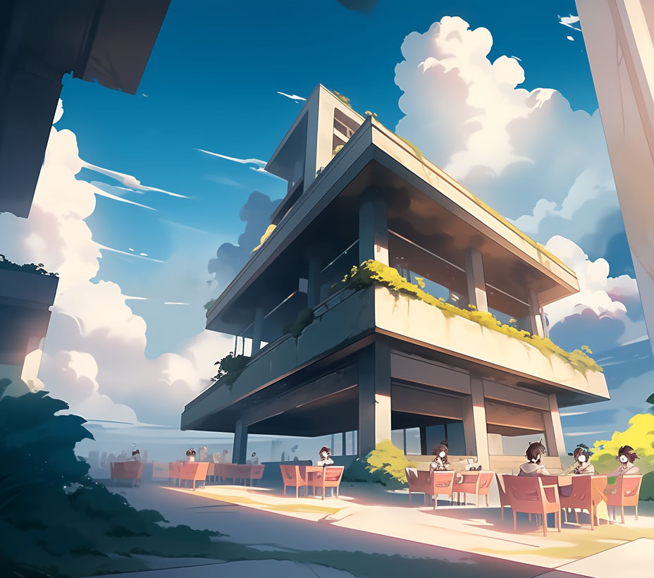
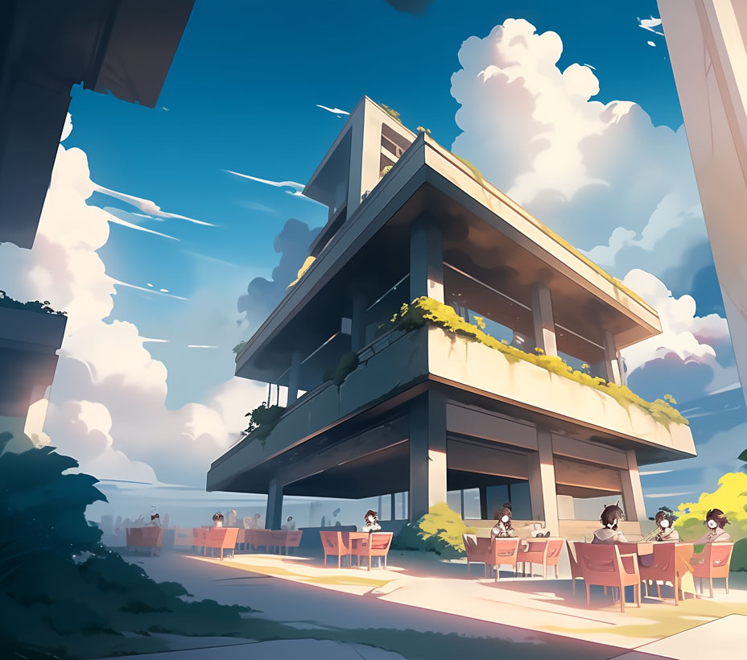

Hey, nice to meet you!
I'm Keitlyn! >>>
I am currently a student in BCIT's New Media and Web Development program. I am particularly interested in front-end development and I am excited to expand my knowledge in software development in the future.
<Interactive websites to Immersive designs>
Growing up in Hong Kong, I was exposed to a lot of Japanese anime, K-pop videos, and Hollywood movies. These forms of media demonstrated to me the ability of visual storytelling to engage and captivate an audience. That's why I am all about creating websites that incorporate dynamic and interactive elements.
<Problem Solving>
I also enjoy tackling problems and ensuring user satisfaction. My approach involves delving deeply into the issue, asking "why" repeatedly, and studying it thoroughly. I strongly believe that persistence is crucial and that any challenge can be overcome. As Louis Zamperini famously stated, To persevere, I think, is important for everybody. Don't Give Up, Don't Give In, There's Always an Answer to Everything.
<Skills>
Web Development
- HTML
- CSS
- JavaScript
- SASS
- Wordpress
- Figma
- Bootstrap
- PHP
- MySQL
Adobe Suite
- Photoshop
- Premiere
- After Effects
- Illustrator
- InDesign
- Audition
- Dimension